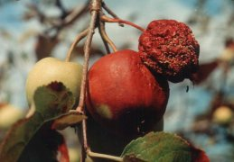

Alma és körte moníliás
gyümölcsrothadása
Monilia fructigena
Csapadékos években okoz súlyos problémát. A gomba csak sebzésen keresztül képes fertőzni. A sebből kiinduló, kezdetben kicsi, majd egyre nagyobbodó foltokon a gomba 1-2 mm átmérőjű, sárgás színű, jellegzetes koncentrikus körökben elhelyezkedő telepei láthatók. A gyümölcs vagy lehullik, vagy összeaszalódva a fán marad (gyümölcs múmia). A kórokozó a "múmiákban" telel át. A gyümölcs tárolása során is nagy veszteséget okoz.
Védekezés:
- A fertőzést elősegítő (sebzés!) rovar kártevők írtása.
- Jégkár után haladéktalanul gombaölőszeres permetezés.
- A téli metszések során a fán száradt gyümölcsmúmiák eltávolítása, megsemmisítése.
- Fungicides permetezés sziromhullás után a szüret előtti időszakig.
Felhasználható készítmények: